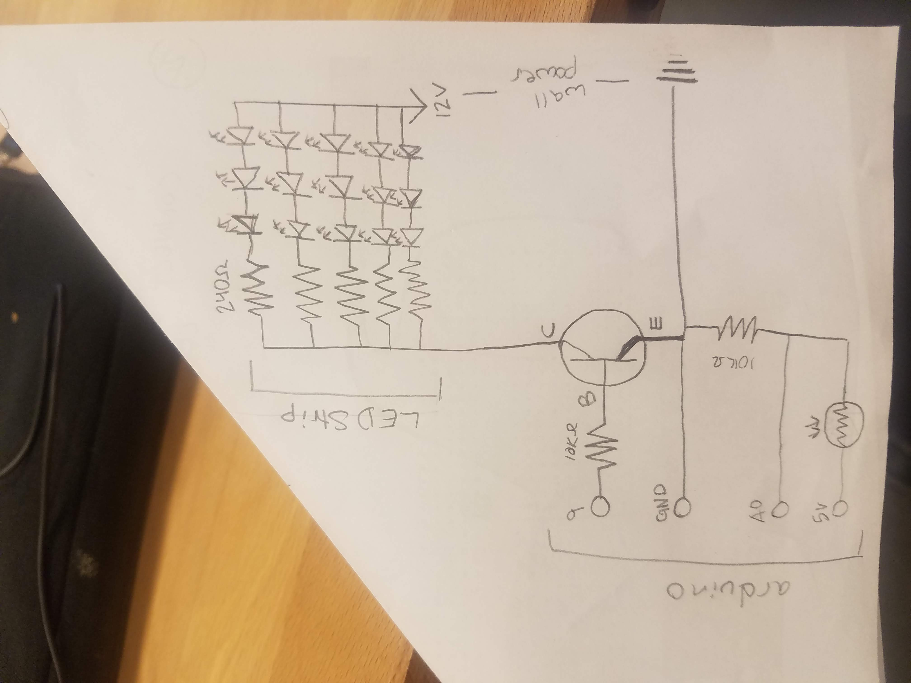
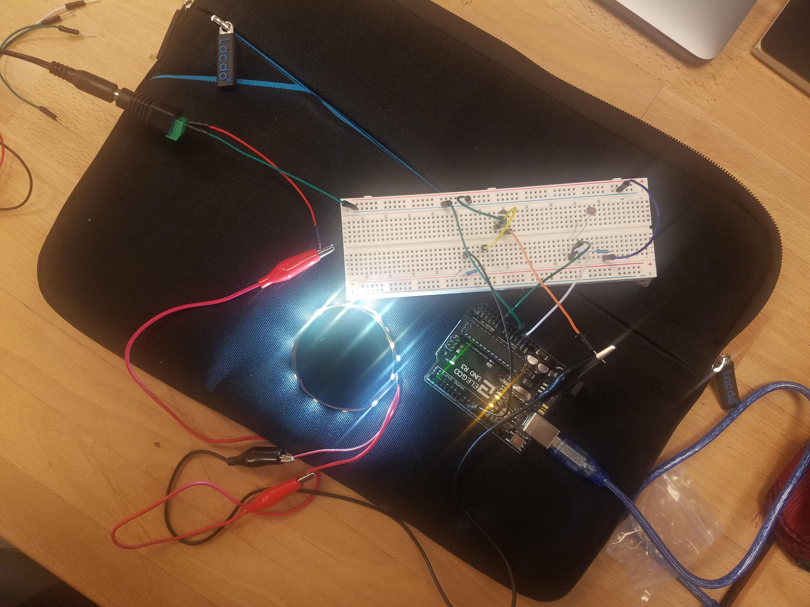

Sam's Assignment 4!
Schematic

This schematic shows how the three parts of this circuit (LED strip, transistor, and LDR) are connected and work. The LED strip is shown in the schematic, however this is not a circuit I built, but one that came surface mounted including reisstors and LEDs. The transistor can provide .6A, but this cicuit only uses about .075A. I know this because the full LED strip uses 18 watts and has 300 LEDs which is .6 watts per LED so for my 15 LEDs they should use about .9 watts. P=VI so .9 watts = 12V (from wall power) * current. .9/12=.075A. For the resistor on the part of the circuit that connects the 5V to LDR to ground I needed a resistor that would limit current when the LDR was at its minimum resistance. With a desired current of 20mA and a voltage of 5V (5V/.02A = 250 Ohms) 10K Ohms is more than enough to limit the current to what the arduino can handle.
Circuit

This circuit uses an LDR to sense changes in light, these changes are translated in the arduino code to changes in output from pin 9 which uses a transistor to moderate connection between an external power source and an LED strip. The sensor part of the circuit uses the 5V pin connected to the LDR with a connection to analog read pin 0 to sense the variation in voltage through the LDR then through a resistor and to the same ground as the LED. The V out can be calculated by the constant resistance from the resistor (10K) divided by the sum of the constant and variable resistance (LDR max 1M)times the V in. Given that, the minimum V out is 5V(10K/(1M+10K))= ~.05V. The LDR can get below 1K resistance in very bright light, at 1K the V out would be 5V(10K/(1K+10K))= ~4.54V.
I wanted to see if I could calculate the necessary value for the base resistor (which keeps the circuit from drawing too much current from the arduino). I found online that the base resistor should be at least the product of transistor amplification (~150 from data sheet at the volatge I am using) and the voltage coming in from pin 9 (5V) over the load current (.075A see earlier calculation). This allows you to see how much resistance is needed to get the transistor to become fully on and fully off at max and min inputs from pin 9 (10000 Ohms in this case, what I used).
Code Snippet
// assign names to A0 and 9 to make clear which is input and outputin the code const int analogInPin = A0;
const int analogOutPin = 9;
//value read from LDR
int sensorValue = 0;
//value output through pin 9
int outputValue = 0;
//runs once
void setup() {
// initialize serial communications at 9600 bps:
Serial.begin(9600);
//initialize A0 as input allowing it to sense changes in LDR
circuit
pinMode(analogInPin, INPUT);
//initialize pin 9 as output allowing it to change brightness of
LED strip
pinMode(analogOutPin, OUTPUT);
}
//repeats
void loop() {
// read the analog in value
sensorValue = analogRead(analogInPin);
// map it to the range of the analog out
//by changing the first two number from the full 10-bit range
(0-1023) to closer to the parameters of input I saw was being
sensed
//in the serial monitor (400-900) it allows the full spectrum of
variation to be mapped to the 8-bit range (0-255)
outputValue = map(sensorValue, 400, 900, 0, 255);
// change the analog out value:
analogWrite(analogOutPin, outputValue);
// print label for sensor value
Serial.print("sensor = ");
//print sensor value
Serial.print(sensorValue);
//print label for output
Serial.print("\t output = ");
//print output value
Serial.println(outputValue);
// wait 2 milliseconds before the next loop for the analog-to-digital
// converter to settle after the last reading:
delay(2);
}
Circuit Operation